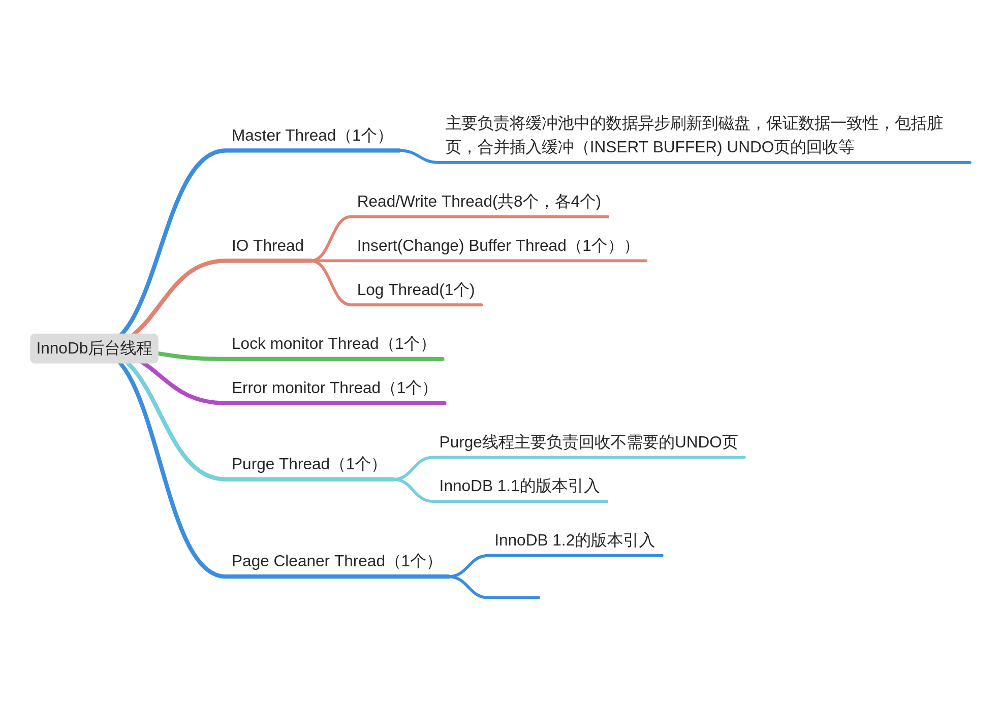
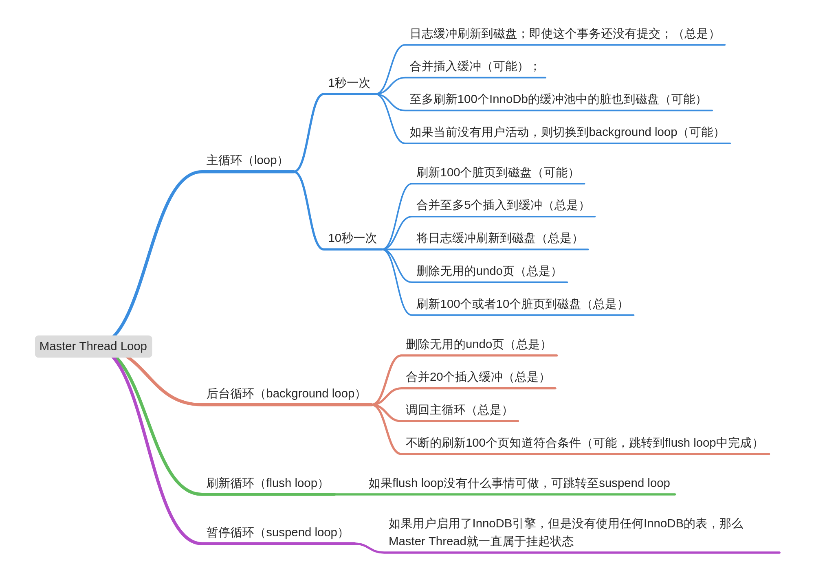

InnoDB的后台线程
InnoDB是单进程多线程，主要的后台线程有：

[注]InnoDB 1.2.X的版本开始才将Master Thread拆分成三个线程(Master Thread,Purge Thread, Page Cleaner Thread)
Master Thread（InnoDB 1.0.x之前的版本）
master thread是一个非常核心的后台线程，具有最高的线程级别，主要负责将缓冲池中的数据异步刷新到磁盘，保证数据的一致性，包括：脏页（dirty page）的刷新、合并插入缓冲（insert buffer merge）、回滚页回收（undo purge）等。
Master Thread 内部由多个循环（loop）组成：主循环（loop）、后台循环（background loop）、刷新循环（flush loop）、暂停循环（suspend loop）。Master Thread 会根据数据库运行状态在loop，background loop，flush loop 和suspend loop中进行切换。
Loop被成为主循环，大多数的操作都是在这个循环中做的。分为两类： 1）每秒操作 2）每10秒操作 伪代码如下：
1 | void master_thread(){ |
可以看到，loop循环通过thread sleep来实现，这意味了每1s或者每10s的操作是不精确的，在负载很大的情况下可能会有延迟（delay）。只能说InnoDB会尽可能保证这个频率。

上图清晰的描述出Master Thread的主要loop的工作及流转。如果仔细看的话，会发现很多硬编码的参数，随着磁盘的升级，有些参数可能已经不是最佳值了。 InnoDB后续的版本中已经提供了参数去配置这些硬编码的值。甚至可以做到根据数据库状态自适应。